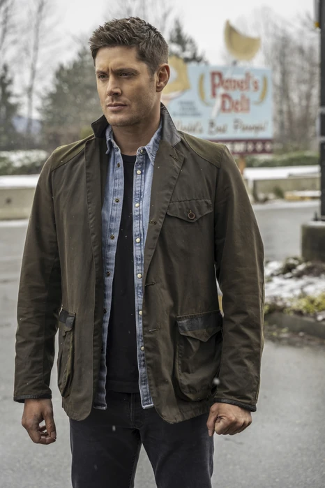
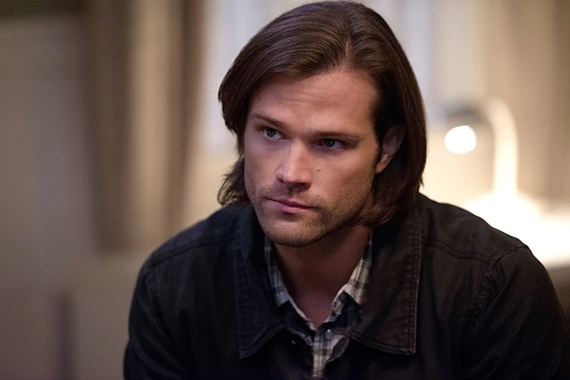
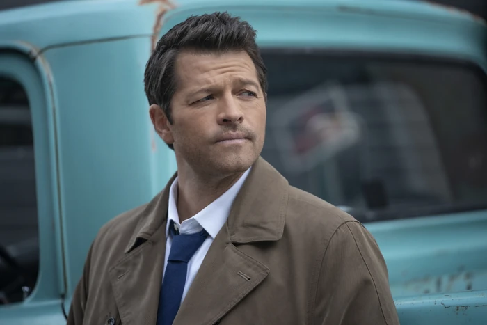
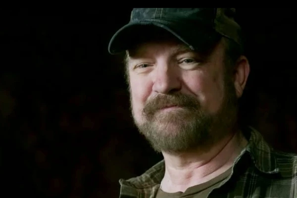
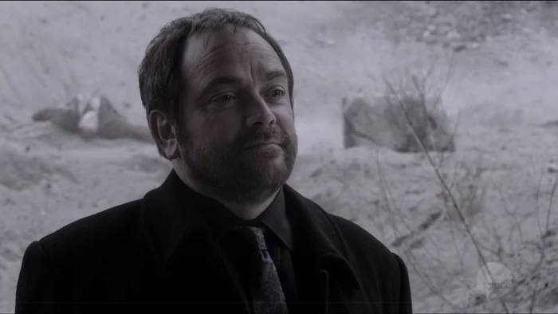
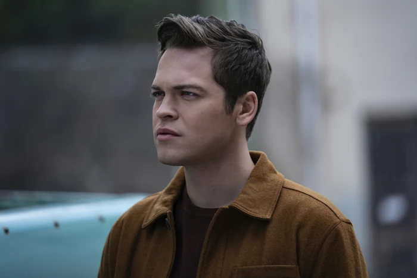

CaçadorDean Winchester
- Líder impulsivo e protetor da família.
- Especialista em combate e investigação de casos.
- Marca registrada: coragem, sarcasmo e lealdade.
Conheça os caçadores e aliados mais marcantes de Supernatural. Cada card resume as características que fazem esses personagens serem tão queridos pelo fandom.

Caçador
Caçador
Anjo
Aliado
Rei do Inferno
Nefilim